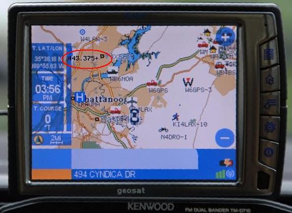

Using the RC-D710 Display with any HT!
Using the RC-D710 Display with any HT!
Using the RC-D710 Display with any HT!
Using the RC-D710 Display with any HT!
When you get out of the car, strap your D710 to your old HT and continue APRS inside!
APRS is a comm system, NOT A VEHICLE TRACKING SYSTEM!
The Display Head for the Kenwood D710 mobile APRS radio contains all of the APRS functionality in addition to the normal Radio control functions. But since the TNC and APRS CPU are all in the Display Head, Kenwood sells it separately as the RC-D710 so that it can be used independently with ANY radio, including even the Dual band DSTAR radios. When detached from the D710 radio and used stand-alone, the default display screen is no longer the dual-band frequencies, but an APRS summary as shown above. It shows the number of each type of station on the air.
The image above shows how I attached it to an old $88 Alinco HT for indoors APRS display. A better method would be to keep the HT separate and just have a 4 foot spkr/mic audio cord over to the radio so that the Display Head can be held in the hands for easy communications and the HT placed in a window or elsewhere for better RF.
Normally the RC-D710 APRS Display Head when used with other radios requires the PG-5J Interface Unit. This unit breaks out the speaker and audio connections for both 1200 and 9600 baud to any other radio that supports the common mini-din "data" connector found on most modern radios for plug-and-play operation. But more importantly it provides a regulated 10 volts at about 360 mA to power the Display Head. When running from 13.8 volts the 10v regulator is disapating almost 2 watts and so this accounts for most of the size of the PG-5J.
Since I only needed SPKR and Mic/PTT for my HT, the mini-din connector was overkill and so the only thing I needed was to supply the 10 volts power. Then I could eliminate the PG-5J and just wire directly to a battery for power and to conventional audio connections.
As you can see in the photo, 8 AA NiCd cells were bundled together across the back and an aluminum bracket held them in place along with the DJ-S11 Alinco radio. A quick disconnect was provided for the battery not only for charging but because the RC-D710 Display Head draws about 10 mA even when off, so you don't want to leave the batteries connected unless you add an external switch. Notice also the reverse diode protection which should blow the fuse if you hook power backwards.
The above photo shows the back of the package with the radio tuned to 144.39 MHz. Notice also the aluminum bracket that holds down the "monitor" button all the time. This is required on these radios to keep the radio from entering battery-saver mode and pulsing power to the receiver. In battery saver mode, the pulsing causes the radio to miss almost all packets, unless the channel is 100% wall-to-wall busy. So best to keep this button always pressed as shown here.
This final sketch shows how I wired the RJ-45 cable to the HT and battery. Be sure to provide small fuse, and reverse diode protection for the inevitable mistakes. I use a 500 mA PTC resettable fuse so I dont have to resolder a fuse each time I do a booboo.
Remember bypassing the PG-5J interface VOIDS the Warranty on your RC-D710 display!

Of course, you can still connect the AVMAP-G5 for the full APRS map display
with full color ICON set.
Bringing all this data indoors is very valuable. The position of this repeater and all other surrounding ham radio activity (APRS and D-PRS mobiles, etc) show up on the attached GPS display. On the right, you can see a 443.375+ repeater along with all the other nearby APRS symbols on the new Avmap G5 map display that supports the full APRS symbol set. click for full size GPS image. For more background you can see a video about the AVMAP.
Attaching an RC-D710 to a DSTAR Radio
Since the RC-D710 Display can work on any radio, attaching one to a DSTAR radio is plug-N-play! Just connect the mini-dins together and set the DSTAR menu properly for the interface and operate the left half of the radio in analog (APRS) mode. Let the RC-D710 perform all of the APRS functions on the LEFT band of the 2820 radio on 144.39 and let the right side of the 2820 perform the DSTAR functions and DigitalVoice as shown below. Plug in an AVMAP G5 into the RC-D710 and you also then get the full color map display and APRS symbols too!

Now you have it all! The above photo is from KB2M who says it was just plug-n-play, just plug the standard DIN audio connection from the D710 display head to the ICOM radio's DIN connection. He had initial difficulty with audio levels, but eventually found that you must use the MPC program on the RC-D710 to set the TX audio level. Also, it was noted that the RC-D710 outputs baseband TX levels and so for some radios, an added 1.0 uF capacitor might need to be inserted in the data line. Jeff found a great location (see photo) inside the PG-5J interface box. Also the GPS needs to feed both the Icom radio and Kenwood Display head, so the serial line from the GPS needs to be split to the two ports. But otherwise it looks real nice! The D710 display in this photo is in a rather boring PACKET MONITOR display, just showing raw packets. But all the other APRS displays are available. See Jeff's actual installation.
The RC-D710 Display Head only costs $199 and makes a nice APRS addition to any radio. It plugs into the TX and RX audio of any radio and turns it into an APRS radio just like the TM-D710 full function APRS radio. It would be nice to find a 10V regulated source inside the 2820 to power the RC-D710 display, otherwise you also need to purchase the PG-5J Cable/Regulator for about $87 to power the display head. It takes 300 mA at 10 volts regulated.
CONCLUSION: On long trips, no matter where you are, we hope you will see not only one of these recommended voice repeaters on your screen, but also the nearest IRLP or EchoLink node as well... This combined with APRS Voice Alert will guarantee that if there is someone nearby wanting to chat, we will find each other.
Bob Bruninga, WB4APR
P.S. . Oh, there is an on line repeater lookup system, but it is just like the repeater directory. So many repeaters, so little time to pick out the one that is useable by travelers...
{kind=link}
{kind=link}
{kind=link}